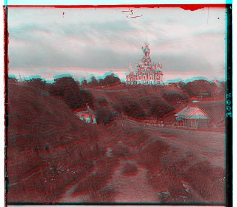

In the 1900s, Prokudin-Gorskii gained permission by the tzar to take pictures throughout the vast Russian empire. He recorded three exposures of every scene on glass panes using red, green, and blue filters. This project seeks to reproduce the true color images using image alignment techniques.
First, out of curiosity, I tried to see how the image would look if I didn't do any alignment at all.

Next, I tried displacements of rows and columns of the array representations to align the red channel with the blue, as well as aligning the green channel with the blue. This was done via scoring by Normal Cross Correlation to see essentially see which displacements would align best when measured by essentially a matrix dot product. I also cropped the edges of the images before measuring as they were not reflective of the true image. I found that the more cropping, the better results.
I was pretty satisfied and so then I tried to apply this to the rest of the images. But then I found a few problems. The window of displacement, -15 to 15, I had initially was not big enough for the tif images. When I widened the window, it also took much more time. So this is when I implemented image pyramid.
Listed below each image is the displacement (rows, columns) of the green and red channels when aligning to blue.
The smaller images were more blurry and possibly less aligned because of their limited number of pixels. For example, it wouldn't be possible to shift the pixels by a half, unless new pixels were computed to predict the new pixels between the existing pixels. This would artificially increase the size of the image and allow for nuance in how much to displace the pictures.
Another observation is that notably, the emir.tif image failed by a large margin. This is because the emir's dress is very particular, which causes trouble with the alignment method that uses NCC. NCC trys to match dark pixels to dark pixels and light pixels to light pixels.